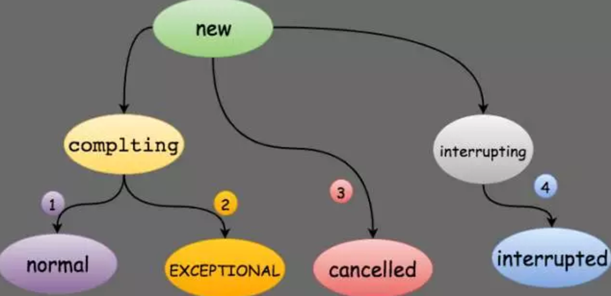
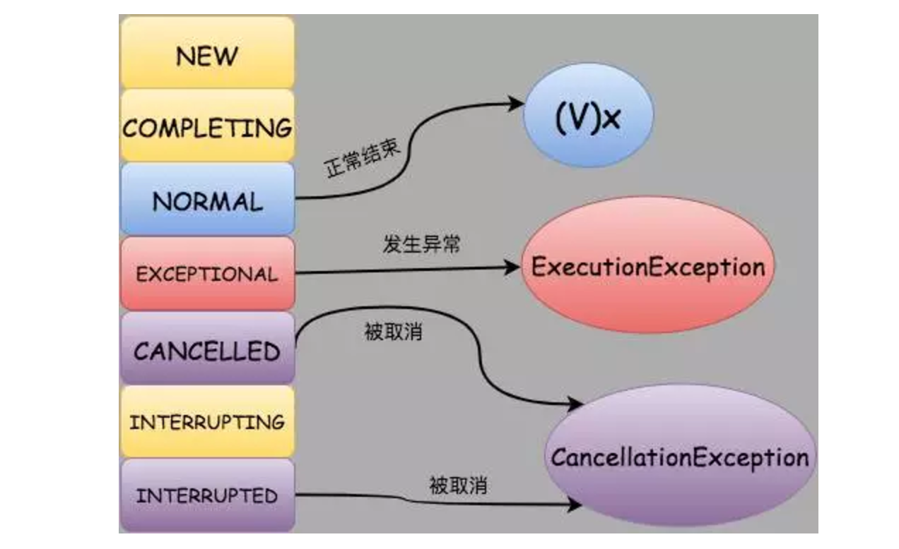

在Java中一般通过继承Thread类或者实现Runnable接口这两种方式来创建多线程，但是这两种方式都有个缺陷，就是不能在执行完成后获取执行的结果，因此Java 1.5之后提供了Callable和Future接口，通过它们就可以在任务执行完毕之后得到任务的执行结果。
1.Callable接口
1 | public interface Callable<V> { |
可以看到Callable是个泛型接口，泛型V就是要call()方法返回的类型。Callable接口和Runnable接口很像，都可以被另外一个线程执行，但是正如前面所说的，Runnable不会返回数据也不能抛出异常。
2.Future接口
Future接口代表异步计算的结果，通过Future接口提供的方法可以查看异步计算是否执行完成，或者等待执行结果并获取执行结果，同时还可以取消执行。
1 | public interface Future<V> { |
cancel():cancel()方法用来取消异步任务的执行。如果异步任务已经完成或者已经被取消，或者由于某些原因不能取消，则会返回false。如果任务还没有被执行，则会返回true并且异步任务不会被执行。如果任务已经开始执行了但是还没有执行完成，若mayInterruptIfRunning为true，则会立即中断执行任务的线程并返回true，若mayInterruptIfRunning为false，则会返回true且不会中断任务执行线程。
isCanceled():判断任务是否被取消，如果任务在结束(正常执行结束或者执行异常结束)前被取消则返回true，否则返回false。
isDone():判断任务是否已经完成，如果完成则返回true，否则返回false。需要注意的是：任务执行过程中发生异常、任务被取消也属于任务已完成，也会返回true。
get():获取任务执行结果，如果任务还没完成则会阻塞等待直到任务执行完成。如果任务被取消则会抛出CancellationException异常，如果任务执行过程发生异常则会抛出ExecutionException异常，如果阻塞等待过程中被中断则会抛出InterruptedException异常。
get(long timeout,Timeunit unit):带超时时间的get()版本，如果阻塞等待过程中超时则会抛出TimeoutException异常。
3.FutureTask
Future只是一个接口，不能直接用来创建对象，FutureTask是Future的实现类。
FutureTask实现了RunnableFuture接口，则RunnableFuture接口继承了Runnable接口和Future接口，所以FutureTask既能当做一个Runnable直接被Thread执行，也能作为Future用来得到Callable的计算结果。
3.1.使用方式
FutureTask一般配合ExecutorService来使用，也可以直接通过Thread来使用。
1 | public class CallDemo { |
3.2.源码分析之构造函数
FutureTask有两个构造函数，其中一个如下：1
2
3
4
5
6public FutureTask(Callable<V> callable) {
if (callable == null)
throw new NullPointerException();
this.callable = callable;
this.state = NEW; // ensure visibility of callable
}
这个构造函数会把传入的Callable变量保存在this.callable字段中，该字段定义为private Callable
state字段用来保存FutureTask内部的任务执行状态，一共有7中状态，每种状态及其对应的值如下：
1 | private volatile int state; |
其中需要注意的是state是volatile类型的，也就是说只要有任何一个线程修改了这个变量，那么其他所有的线程都会知道最新的值。
NEW:表示是个新的任务或者还没被执行完的任务。这是初始状态。
COMPLETING:任务已经执行完成或者执行任务的时候发生异常，但是任务执行结果或者异常原因还没有保存到outcome字段(outcome字段用来保存任务执行结果，如果发生异常，则用来保存异常原因)的时候，状态会从NEW变更到COMPLETING。但是这个状态会时间会比较短，属于中间状态。
NORMAL:任务已经执行完成并且任务执行结果已经保存到outcome字段，状态会从COMPLETING转换到NORMAL。这是一个最终态。
EXCEPTIONAL:任务执行发生异常并且异常原因已经保存到outcome字段中后，状态会从COMPLETING转换到EXCEPTIONAL。这是一个最终态。
CANCELLED:任务还没开始执行或者已经开始执行但是还没有执行完成的时候，用户调用了cancel(false)方法取消任务且不中断任务执行线程，这个时候状态会从NEW转化为CANCELLED状态。这是一个最终态。
INTERRUPTING: 任务还没开始执行或者已经执行但是还没有执行完成的时候，用户调用了cancel(true)方法取消任务并且要中断任务执行线程但是还没有中断任务执行线程之前，状态会从NEW转化为INTERRUPTING。这是一个中间状态。
INTERRUPTED:调用interrupt()中断任务执行线程之后状态会从INTERRUPTING转换到INTERRUPTED。这是一个最终态。
ps：所有值大于COMPLETING的状态都表示任务已经执行完成(任务正常执行完成，任务执行异常或者任务被取消)。
各个状态之间的可能转换关系如下图所示:

另外一个构造函数如下：
1 | public FutureTask(Runnable runnable, V result) { |
这个构造函数会把传入的Runnable封装成一个Callable对象保存在callable字段中，同时如果任务执行成功的话就会返回传入的result。这种情况下如果不需要返回值的话可以传入一个null。
在new了一个FutureTask对象之后，接下来就是在另一个线程中执行这个Task,无论是通过直接new一个Thread还是通过线程池，执行的都是run()方法，接下来就看看run()方法的实现。
3.2.源码分析之run方法
run()方法实现如下:
1 | public void run() { |
run()方法首先会
- 1.判断当前任务的state是否等于NEW,如果不为NEW则说明任务或者已经执行过，或者已经被取消，直接返回。
- 2.如果状态为NEW则接着会通过unsafe类把任务执行线程引用CAS的保存在runner字段中，如果保存失败，则直接返回。
- 3.执行任务。
- 4.如果任务执行发生异常，则调用setException()方法保存异常信息。否则执行set()设置结果和状态值。
- 5.任务如果是被中断的，执行 handlePossibleCancellationInterrupt()处理状态和中断响应。
3.3源码分析之setException方法
1 | protected void setException(Throwable t) { |
在setException()方法中
- 1.首先会CAS的把当前的状态从NEW变更为COMPLETING(中间状态)状态。
- 2.把异常原因保存在outcome字段中，outcome字段用来保存任务执行结果或者异常原因。
- 3.CAS的把当前任务状态从COMPLETING变更为EXCEPTIONAL。这个状态转换对应着上图中的二。
- 4.调用finishCompletion()。
3.4.源码分析之set方法
1 | protected void set(V v) { |
- 1.首先会CAS的把当前的状态从NEW变更为COMPLETING状态。
- 2.把任务执行结果保存在outcome字段中。
- 3.CAS的把当前任务状态从COMPLETING变更为NORMAL。这个状态转换对应着上图中的一。
- 4.调用finishCompletion()。
发起任务线程(threadpool)跟执行任务线程(main)通常情况下都不会是同一个线程，在任务执行线程执行任务的时候，任务发起线程可以查看任务执行状态、获取任务执行结果、取消任务等等操作，接下来分析下这些操作。
3.5.源码分析之get方法
任务发起线程可以调用get()方法来获取任务执行结果，如果此时任务已经执行完毕则会直接返回任务结果，如果任务还没执行完毕，则调用方会阻塞直到任务执行结束返回结果为止。get()方法实现如下:1
2
3
4
5
6public V get() throws InterruptedException, ExecutionException {
int s = state;
if (s <= COMPLETING)
s = awaitDone(false, 0L);
return report(s);
}
- 1.判断任务当前的state <= COMPLETING是否成立。前面分析过，COMPLETING状态是任务是否执行完成的临界状态。
- 2.如果成立，表明任务还没有结束(这里的结束包括任务正常执行完毕，任务执行异常，任务被取消)，则会调用awaitDone()进行阻塞等待。
- 3.如果不成立表明任务已经结束，调用report()返回结果。
当调用get()获取任务结果但是任务还没执行完成的时候，调用线程会调用awaitDone()方法进行阻塞等待，该方法定义如下:
1 | private int awaitDone(boolean timed, long nanos) |
awaitDone()中有个死循环，每一次循环都会：
- 1.判断调用get()的线程是否被其他线程中断，如果是的话则在等待队列中删除对应节点然后抛出InterruptedException异常。
- 2.获取任务当前状态，如果当前任务状态大于COMPLETING则表示任务执行完成，则把thread字段置null并返回结果。
- 3.如果任务处于COMPLETING状态，则表示任务已经处理完成(正常执行完成或者执行出现异常)，但是执行结果或者异常原因还没有保存到outcome字段中。这个时候调用线程让出执行权让其他线程优先执行。
- 4.如果等待节点为空，则构造一个等待节点WaitNode。
- 5.如果第四步中新建的节点还没如队列，则CAS的把该节点加入waiters队列的首节点。
- 6.阻塞等待。
假设当前state=NEW且waiters为NULL,也就是说还没有任何一个线程调用get()获取执行结果，这个时候有两个线程threadA和threadB先后调用get()来获取执行结果。再假设这两个线程在加入阻塞队列进行阻塞等待之前任务都没有执行完成且threadA和threadB都没有被中断的情况下(因为如果threadA和threadB在进行阻塞等待结果之前任务就执行完成或线程本身被中断的话，awaitDone()就执行结束返回了)，执行过程是这样的，以threadA为例:
- 1.第一轮for循环，执行的逻辑是q == null,所以这时候会新建一个节点q。第一轮循环结束。
- 2.第二轮for循环，执行的逻辑是!queue，这个时候会把第一轮循环中生成的节点的netx指针指向waiters，然后CAS的把节点q替换waiters。也就是把新生成的节点添加到waiters链表的首节点。如果替换成功，queued=true。第二轮循环结束。
- 3.第三轮for循环，进行阻塞等待。要么阻塞特定时间，要么一直阻塞知道被其他线程唤醒。
3.6.源码分析之cancel方法
1 | public boolean cancel(boolean mayInterruptIfRunning) { |
- 1.判断任务当前执行状态，如果任务状态不为NEW，则说明任务或者已经执行完成，或者执行异常，不能被取消，直接返回false表示执行失败。
- 2.判断需要中断任务执行线程，则
- 把任务状态从NEW转化到INTERRUPTING。这是个中间状态。
- 中断任务执行线程。
- 修改任务状态为INTERRUPTED。这个转换过程对应上图中的四。
- 3.如果不需要中断任务执行线程，直接把任务状态从NEW转化为CANCELLED。如果转化失败则返回false表示取消失败。这个转换过程对应上图中的四。
- 4.调用finishCompletion()。
3.7.源码分析之finishCompletion方法
不管是任务执行异常还是任务正常执行完毕，或者取消任务，最后都会调用finishCompletion()方法
1 | private void finishCompletion() { |
依次遍历waiters链表，唤醒节点中的线程，然后把callable置空。
被唤醒的线程会各自从awaitDone()方法中的LockSupport.park()阻塞中返回，然后会进行新一轮的循环。在新一轮的循环中会返回执行结果(或者更确切的说是返回任务的状态)。
3.8.源码分析之report()
report()方法用在get()方法中，作用是把不同的任务状态映射成任务执行结果。
1 | private V report(int s) throws ExecutionException { |

如果任务处于NEW、COMPLETING和INTERRUPTING这三种状态的时候是执行不到report()方法的，所以没必要对这三种状态进行转换。
3.9.源码分析之get(long,TimeUnit)
带超时等待的获取任务结果，实现如下:
1 | public V get(long timeout, TimeUnit unit) |
跟get()不同点在于get(long,TimeUnit)会在awaitDone()超时返回之后抛出TimeoutException异常。
3.10.源码分析之isCancelled()和isDone()
这两个方法分别用来判断任务是否被取消和任务是否执行完成，实现都比较简单，代码如下:
1 | public boolean isCancelled() { |
4.总结
FutureTask的实现还是比较简单的，当用户实现Callable()接口定义好任务之后，把任务交给其他线程进行执行。FutureTask内部维护一个任务状态，任何操作都是围绕着这个状态进行，并随时更新任务状态。任务发起者调用get()获取执行结果的时候，如果任务还没有执行完毕，则会把自己放入阻塞队列中然后进行阻塞等待。当任务执行完成之后，任务执行线程会依次唤醒阻塞等待的线程。调用cancel()取消任务的时候也只是简单的修改任务状态，如果需要中断任务执行线程的话则调用Thread.interrupt()中断任务执行线程。
有个值得关注的问题就是当任务还在执行的时候用户调用cancel(true)方法能否真正让任务停止执行呢？
当调用cancel(true)方法的时候，实际执行还是Thread.interrupt()方法，而interrupt()方法只是设置中断标志位，如果被中断的任务执行线程处于sleep()、wait()或者join()逻辑中则会抛出InterruptedException异常。因此结论是:cancel(true)并不一定能够停止正在执行的异步任务。